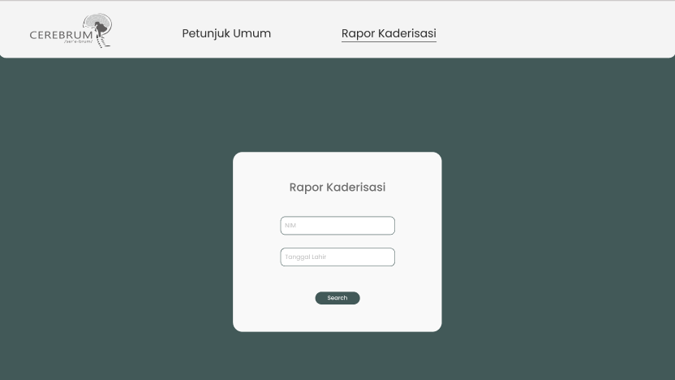

Hi, I'm Mel
An Informatics Student

About me
I am very hardworking in things I am passionate about and currently, I am trying to find my way in Front-End Development using Tailwind-CSS.
Surabaya Model United Nations

Cerebrum
These are the projects I am currently working on. They are still in progress.